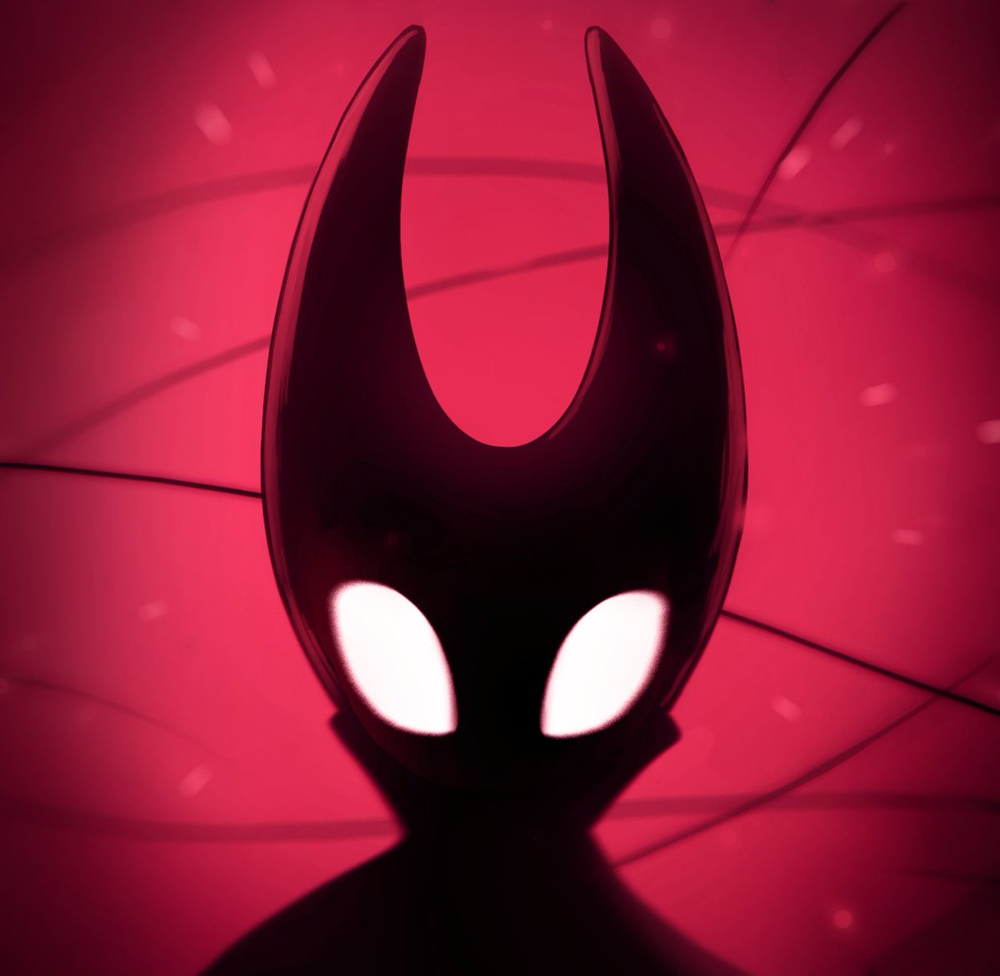

Hollow Knight
Hollow Knight é um jogo indie de gênero metroidvania desenvolvido e publicado pela Team Cherry, lançado para Microsoft Windows, macOS e Linux em 2017 e, posteriormente, para Nintendo Switch, Playstation 4 e Xbox One em 2018.
No jogo, um cavaleiro sem nome explora um reino em ruínas habitado por insetos, desbloqueando habilidades novas que ajudam a explorar e livrar o reino de uma infecção causada por um deus esquecido.

Desenvolvimento

Hollow Knight foi anunciado pela primeira vez no Kickstarter em 19 de Novembro de 2014, buscando a soma de AU$ 35 mil até 19 de Dezembro. O jogo ultrapassou esse objetivo, levantando mais de AU$ 58 mil. Durante os dois anos desde o lançamento inicial, 4 pacotes de conteúdos adicionais grátis e várias atualizações foram adicionadas. Alguns conteúdos dos apoiadores que não foram adicionados, assim como o objetivo de um 2º personagem jogável serão cumpridos na continuação, Hollow Knight: Silksong.
Jogabilidade
O Cavaleiro pode explorar o vasto mundo interligado de Hallownest usando várias técnicas de movimento e combate. No estilo clássico de Metroidvania, há áreas do mundo que o Cavaleiro não pode acessar sem obter certas Habilidades ou Itens. Mapas de cada área podem ser comprados de um comerciante geralmente escondido em algum lugar daquela área, o Cavaleiro também pode comprar melhorias para colocar marcadores no mapa ou para possibilitar que o mapa se revele à medida que for explorado. Várias áreas contém um 'chefe' que o Cavaleiro deve derrotar para continuar, e também vários mini-chefes que largam recompensas ou melhorias.
Inimigos derrotados derrubam Geo, uma moeda que o Cavaleiro pode usar para comprar itens dos comerciantes. Se o Cavaleiro for morto, será revivido no último lugar em que descansou e perderá todo seu Geo. Ele deve retornar ao lugar em que morreu e derrotar sua Sombra para recuperar o Geo perdido. O Cavaleiro também ganha ALMA golpeando inimigos, que pode ser usada para recuperar pontos de vida ou ativar habilidades especiais. Vida também pode ser recuperada nas Fontes Termais, que ficam localizadas pelo mundo, ou descansando em um Banco.